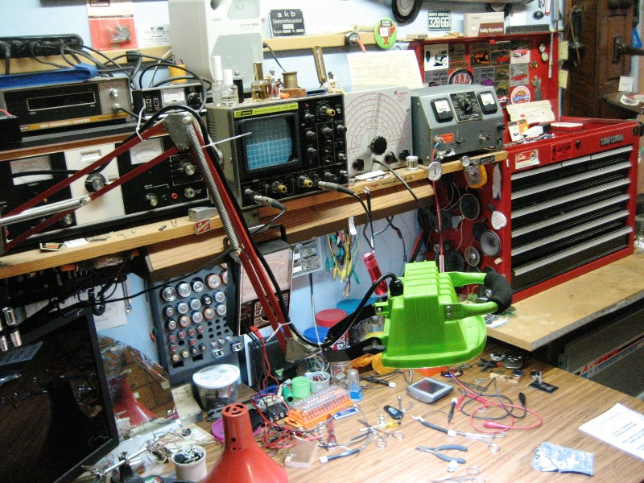

5th December 2013, 08:59 pm
The snow came yesterday on the Minnesota prairie. It was mild at first and snowed heavily. As the day went on it got colder and the wind became stronger. It was beautiful to see everything white. By late afternoon the snow fall lightened so it was just flurry’s, I then cleaned 6 maybe 8 inches of snow off my driveway. The wind had become strong and it was not comfortable out side as it became dusk.
This morning the sky was clear out and a beautiful blue color. The temperature was at 0 Fahrenheit and the wind was still gusting to 35 to 39 MPH. It was so beautiful outside I just couldn’t stay indoors.
The bright light to the right of the sun in the picture, we always called a sun dog. They would be seen one on each side of the sun when it was very cold and clear out. I learned that they are caused by the reflection of ice crystals in the air. I couldn’t resist taking a picture because they were very bright today.
The road in the picture runs due south. You can see how low the sun is in the south. It was a Little after 11:42 AM when I took the picture.You can see High Noon doesn’t happen here this time of year.
Also note how the fields have been swept almost bare in spots by the strong winds. I am standing in the windbreak on the East side of my large farm grove, so the snow is not drifting close to me. The wind is from the Northwest and you can see down the road where the snow is sweeping across where the windbreak ended. Yesterday afternoon the trees had been loaded with snow now they are clear. I started to walk to the west side of the farm woods. As I got closer to the windward side I had to turn back. The snow had piled in deep and I hadn’t dressed warm enough to bear the cold wind. I went back inside, so thankful I don’t have to work out in this anymore.
5th December 2013, 03:55 pm
This is the new LED light I received from my son for my Birthday this year. I decided the best use would be for a light at my workbench. You can see in the picture the nice antique bench light I have been using. I have liked the position of the old lamp but it had a drawback in the fact the metal shade would get hot enough to burn your hand after a bit of use. As a matter of fact the plastic in the lamp sockets would fail after a 2 or 3 years of use. The 100 watt light bulbs I have been getting lately would also come apart where the glass bulb is bonded to the base. I had scored back in the early 1990′s on a batch of these lamps at an auction sale. I had sold some, used many, but now I was coming to the end of them.
The project was to mount the new LED lamp in a handy way. The lamp I was using at my desk made it appear that this could become a bit complicated. I dug out a bench light that had failed, so I wouldn’t destroy my working lamp. I was glad the pack-rat in me had tucked this one away.
I had anticipated a job that would require the fabrication of brackets. As you can see from the next picture with the light housing removed the job became very simple.
I knew I had it made when there was a extra hole in the center of the LED bracket that was just the right size. You can see how the cast pins that fit into holes on the old light housing fit on each side of the LED mounting bracket.
This holds the light very straight, almost like it was designed to fit.
I just had to show the shelf mount I made a few years ago to replace the clamp on unit. It was simple a washer welded to a piece of tube, than drilled to fit the lamp base. I also drilled a hole to screw the bracket down. The clamp on bracket would work loose at times. It also took up room that you can see I need.
The Finished Light Unit
The last Picture shows the finished unit. I really like the bright white light for working at my hobby things. As the years slip by I find that I need more light to see small things and this really does the trick. My son did an excellent job of picking a useful gift for an old man. Thank You Jeremy
{kind=link}
{kind=link}
{kind=link}
{kind=link}
{kind=link}
{kind=link}
{kind=link}
{kind=link}